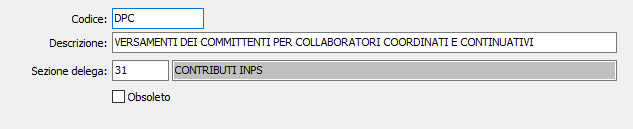

Causali contributi Inps
La tabella contiene gli elementi della sezione 3 CONTRIBUTI INPS dell’F24 che, a causa della struttura delle informazioni, non possono essere contenuti nella tabella codici tributi. Serve per la compilazione della delega unificata F24 e talune causali sono contenute all’interno dei movimenti dei compensi a terzi.

CODICE: codice alfanumerico di 4 caratteri, corrispondente alla codifica INPS, che definisce il contributo in esame. Sul campo sono attive le funzioni di vista sulla tabella stessa.
DESCRIZIONE: campo alfanumerico di 50 caratteri per descrivere la denominazione del contributo.
SEZIONE F24: campo numerico di 2 caratteri per definire la sezione della Delega Unificata in cui deve essere stampato il contributo in esame. Valori ammessi:
21 - SEZIONE 2 SE RITENUTE ALLA FONTE
22 - SEZIONE 2 SE IVA PERIODICA E A SALDO
23 - SEZIONE 2 SE IMPOSTE DIRETTE
24 - SEZIONE 2 SE ALTRI TRIBUTI E INTERESSI
31 - SEZIONE 3 SI CONTRIBUTI INPS
41 - SEZIONE 4 SR REGIONI
42 - SEZIONE 4 SR ENTI LOCALI
51 - SEZIONE 5 SA INAIL
52 - SEZIONE 5 SA SEZIONE ALTRI ENTI
61 - SEZIONE CR GESTIONE CREDITI
62 - SEZIONE CR CREDITI UTILIZZATI IN DICHIARAZIONE
ALCUNE CAUSALI CONTRIBUTO:
AF CONTRIBUTI DOVUTI SUL REDDITO MINIMALE
AFP CONTRIBUTI DOVUTI SUL REDDITO MINIMALE A
AP CONTRIBUTI DOVUTI SUL REDDITO ECCEDENTE
API INTERESSI SULLA RATA DEL CONTRIBUTO EXTR
APP CONTRIBUTI DOVUTI SUL REDDITO ECCEDENTE
APR CONTRIBUTI DOVUTI SUL REDDITO ECCEDENTE
CF CONTRIBUTI DOVUTI SUL REDDITO MINIMALE
CFP CONTRIBUTI DOVUTI SUL REDDITO MINIMALE A
CP CONTRIBUTI DOVUTI SUL REDDITO ECCEDNTE I
CPI INTERESSI SULLA RATA DEL CONTRIBUTO EXTR
CPP CONTRIBUTI DOVUTI SUL REDDITO ECCEDENTE
CPR CONTRIBUTI DOVUTI SUL REDDITO ECCEDENTE
DM10 ATTIVI, PASSIVI, INSOLUTI
DMRA SOMME DOVUTE PER NOTE DI RETTIFICA DA DM
DPC VERSAMENTI DEI COMMITTENTI PER I COLLABO
DPP VERSAMENTI DEI PROFESSIONISTI - ACCONTI
DPPI VERSAMENTI DEI PROFESSIONISTI - INTERESS
DPPR VERSAMENTI DEI PROFESSIONISTI – RATEIZZA